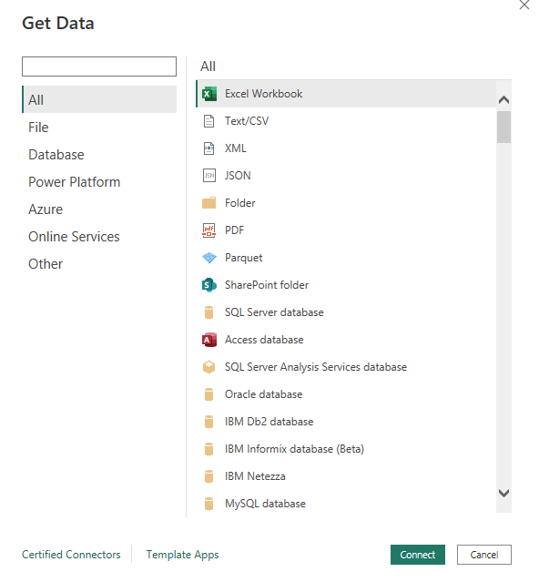
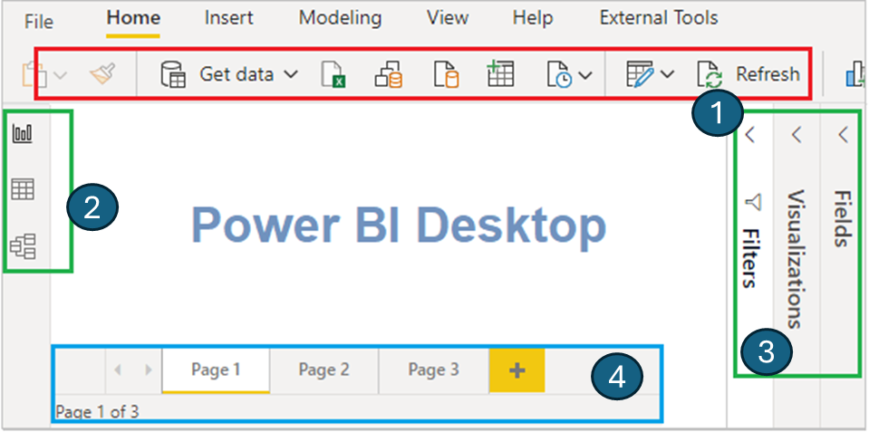
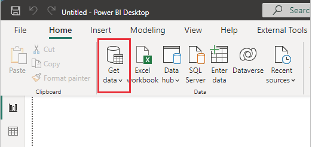
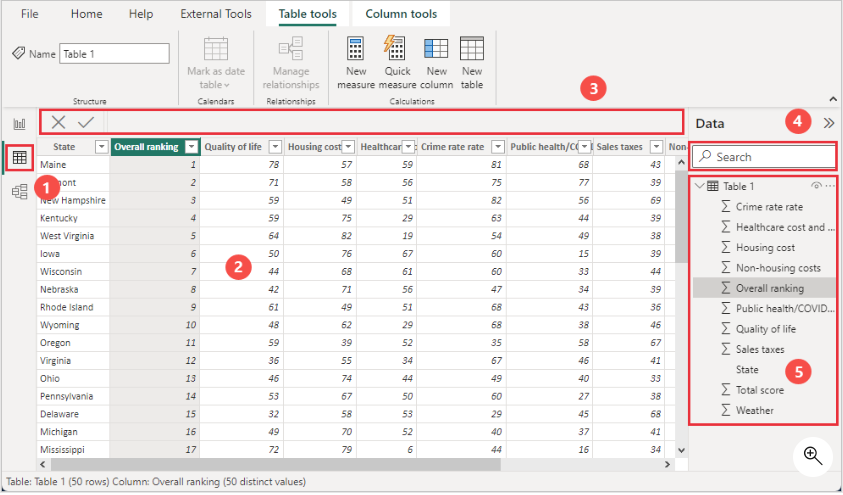
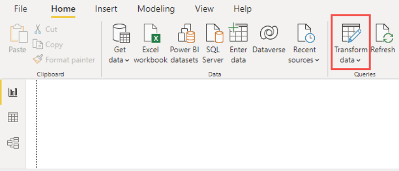
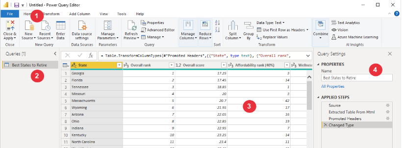

Lecture Note Week 3
Learning Objective:
Section 1: Introduction to R Language
What is R?
R is a programming language and free software environment for statistical computing and graphics supported by the R Foundation for Statistical Computing. The R language is widely used among statisticians and data miners for developing statistical software and data analysis.
Why R?
- R is open-source and free
- R is a powerful tool for data analysis
- R has a large and active community
- R has a large number of packages for data analysis
- R is a programming language and can be used for automating data analysis tasks
- R is a great tool for reproducible research
RStudio
Rsudio is an integrated development environment (IDE) for R. It includes a console, syntax-highlighting editor that supports direct code execution, as well as tools for plotting, history, debugging and workspace management.
Basic of R
R as a Calculator
R Objects
In R, everything is an object. These objects serve as containers for various types of data. Whether you’re dealing with a single number, a character string (like a word), or a complex structure like the output of a plot or a statistical analysis summary, it’s all represented as an object.
Creating Objects:
To create an object, you simply give it a name. For instance
In this example, an object is created called x and it is assigned the value 5. The <- is the assignment operator. It assigns the value on the right to the object on the left. You can also use = to assign values to objects, but it’s considered bad practice.
Viewing Objects:
To view the value of an object, you simply type the name of the object and press enter. For instance:
R keeps track of all objects in the current workspace during the session. You can see all the objects in the current workspace by typing ls() in the console.
Opearations with Objects:
You can perform operations with objects. For instance:
Objects names:
Object names can contain letters, numbers, periods, and underscores. However, they can only starts with letters or underscore and nothing else. They are case-sensitive, so x and X are different objects. They cannot start with a number or a period. If you would like to insist to have numbers or period as the first character, you can use backticks to define the object name. It is called nonsyntactic names. For instance, you can define the following:
Exercises:
- Create an object called
aand assign the value10to it. - Create an object called
band assign the value20to it.
- Create an object called
starand assign the valuea + bto it. - View the value of
star. - Which of the following is not the syntactic name for an object?
xX1xx1x.yx_y
Data Types
R has several data types. The most common data types are:
- Numeric (double)
- represents eal numbers (e.g., 3.14, 0.0001, 1000.0).
- can be positive or negative.
- can be in scientific notation (e.g., 1.23e-5).
- used for continuous data like measurements, weights, heights, etc.
- Character
- represents text data (e.g., “hello”, “world”, “R is fun”).
- must be enclosed in quotes.
- used for categorical data (e.g., “High School”, “Primary School”, “University”).
- Logical (boolean)
- represents binary data (e.g., TRUE or FALSE).
- used for logical operations.
- Integer
- represents whole numbers (e.g., 1, 2, 3, 1000).
- can be positive or negative.
- used for counting data like number of students, number of cars, etc.
- sometimes you will see it ends with
L(e.g., 1L, 2L, 3L, 1000L). This is to indicate that the number is an integer.
- Factors
- represents categorical data (e.g., “High School”, “Primary School”, “University”).
- used for categorical data.
- Complex
- represents complex numbers (e.g., 1 + 2i, 3 + 4i, 5 + 6i).
- used for complex data like electrical engineering, physics, etc.
However, we seldom deal with complex data types. We will focus on the first four data types.
Exercises:
- What is the data type of
3.14? - What is the data type of
"hello"? - What is the data type of
TRUE? - What is the data type of
1L? - What is the data type of
factor("High School")? - What is the data type of
1 + 2i? - What is the data type of
"1"?
Note: You can check your answers using typeof() function.
Functions
A function is a block of code that performs a specific task. R has a large number of in-built functions and also allows users to define their own functions. We will learn more about how to create functions in the coming weeks. But so far, we will use some of the in-built functions. Anything that starts with ( and end with ) is a function.
Exercises:
Which of the following is a function?
mean()mediansd()var()sum[]
Vectors
Vectors are the most basic data structure in R. They are one-dimensional arrays that can hold numeric, character, or logical data. You can create a vector using the c() function. For instance:
Accessing Elements:
You can access the elements of a vector using the index. For instance:
Exercises:
- Create a vector called
awith the values11, 2, 33, 4, 5. - Create a vector called
bwith the values"a", "bc", "c", "d", "ef".
Data Frames
Data frames are the most common data structure in R. They are used to store tabular data. A data frame is a list of vectors of equal length. Each vector represents a column in the data frame, and each element in the vector represents a row in the data frame.
Creating Data Frames:
You can create a data frame using the data.frame() function. For instance:
Accessing Data Frames:
You can access the elements of a data frame using the row and column indices. For instance:
Exercises:
- Create a data frame called
studentswith the following columns:name,age,gender,height, andweight. The data should be as follows:
name: “Alice”, “Bob”, “Charlie”, “David”age: 25, 30, 35, 40gender: “F”, “M”, “M”, “M”
Lists
Lists are another data structure in R that can hold elements of different data types. You can create a list using the list() function. For instance:
You can access the elements of a list using the index. For instance:
Exercises:
- Create a list called
ywith the following elements:1,"b",FALSE.
Packages
R packages are collections of functions and data sets developed by the community. They increase the power of R by improving existing base R functionalities, or by adding new ones.
You can install packages using the install.packages() function, and load them using the library() function. For instance:
You do not need to install packages every time. You just need to install it once, and you can use them directly by loading them using the library() function.
Section 2: Introduction to Power BI
Welcome to Power BI!
Power BI is a powerful business analytics tool that enables you to visualize data, share insights, and make data-driven decisions. This introductory document will guide you through the basics of Power BI and help you get started with creating your first report.
1. What is Power BI?
Power BI is a suite of business analytics tools by Microsoft that includes software, services, and connectors. It transforms your unrelated sources of data into coherent, visually immersive, and interactive insights. Your data may be an Excel spreadsheet, or a collection of cloud-based and on-premises hybrid data warehouses.
Getting Started
1. Download and Install Power BI Desktop
Go to the Power BI website and download the Power BI Desktop.
Follow the installation instructions to install Power BI Desktop on your computer.
2. Open Power BI Desktop
Once installed, open Power BI Desktop. You will see the following interface:

3. Connect to Data
To start working with data, you need to connect Power BI to your data source. Here’s how:
- Click on the “Home” tab.
- Click on the “Get Data” button.

- Select your data source from the list (e.g., Excel, SQL Server, Web, etc.).

- Follow the prompts to load your data into Power BI.
4. Transform Data with Power Query Editor
After loading your data, you might need to clean and transform it. Use Power Query Editor for this purpose:
Click on the “Home” tab.
Click on the “Transform Data” button.

The Power Query Editor will open, where you can clean and prepare your data.

5. Create Visualizations
Once your data is ready, you can start creating visualizations:
Go back to the main Power BI Desktop window.
In the “Visualizations” pane, select the type of visualization you want to create (e.g., bar chart, line chart, pie chart, etc.).
Drag and drop fields from the “Fields” pane to the “Values”, “Axis”, “Legend”, etc., in the “Visualizations” pane.

6. Build Reports
Combine multiple visualizations into a report:
Use the “Report” view in Power BI Desktop.
Arrange your visualizations on the canvas.
Add titles, labels, and other elements to enhance your report.
7. Save and Publish Your Report 👈 (This feature will not be taught for this course as it needs a paid version)
Click on the “File” tab.
Select “Save As” to save your report locally.
To share your report, click on the “Publish” button.

Follow the prompts to publish your report to the Power BI service, where you can share it with others.
Conclusion
Congratulations! You have successfully created your first Power BI report. Power BI is a versatile tool with many advanced features, so continue exploring and experimenting to unlock its full potential. Happy data analyzing!
Section 3: Data Wrangling in Power BI
1. Introduction to Power BI
Overview of Power BI: Power BI is a suite of business analytics tools that deliver insights throughout your organization. You can connect to hundreds of data sources, simplify data prep, and drive ad hoc analysis. Produce beautiful reports, then publish them for your organization to consume on the web and across mobile devices.
Understanding the Power BI Interface:

Home Ribbon (1): Access common actions like getting data, viewing data transformations, and publishing reports.
Report View (2): Design your report using various visualizations.
Data View (2) : See the data tables and make transformations.
Model View (2): Manage the relationships between different tables in your dataset.
Fields Pane (3): Contains the tables and fields in your data model.
Visualizations Pane (3): Choose from a variety of visualizations to represent your data.
Connecting to Various Data Sources: To get started, open Power BI and load your dataset:
Go to the Home tab and click Get Data.

Choose the type of data source (e.g., Excel, SQL Server, etc.).
- Navigate to the location of your dataset (in this case, the “Store Sales.pbix” file) and load it into Power BI.
2. Data Import and Transformation
Importing Data: Once the dataset is loaded, you can see the data in the Data View. If needed, you can refresh the data to get the latest updates.

Using Power Query Editor:
Click on Transform Data to open the Power Query Editor.

In the Power Query Editor, you can see a list of queries (tables) on the left, the data preview in the middle, and applied steps on the right.

Video Resources for Power BI
- Loading data
- Removing rows and columns
- Changing data types
- Working with columns
- Data transformation
- Mathematical operations
- Refreshing data source
- Sorting data
- Filtering values
- Replacing values
- Removing duplicates/missing values
- Transpose
- Group By
- Pivot